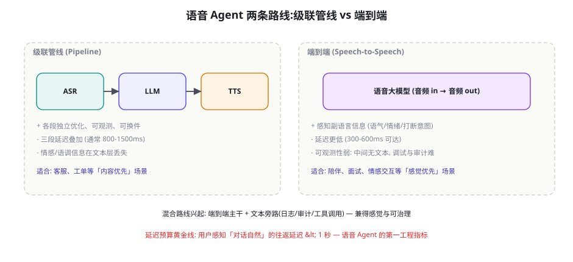
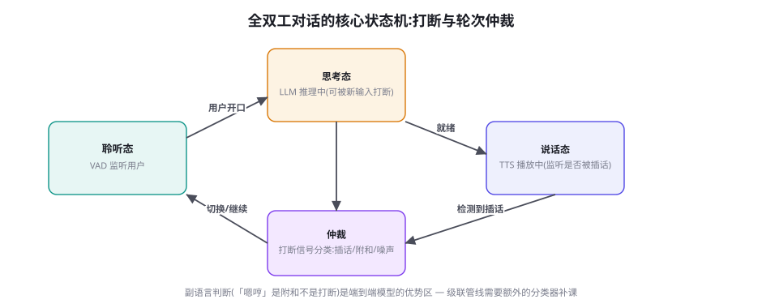

语音 Agent 与实时多模态交互
多模态篇收官章：时间维度的模态。语音交互把「延迟」从成本问题变成「体验问题」（对话自然的红线是往返一秒）、把「轮次」从消息边界变成状态机（打断、附和、沉默都含语义）。本章讲级联与端到端两条路线、延迟预算的工程分解、打断处理与全双工状态机、以及电话 Agent 的生产架构——多模态篇由此完成「看见（66）、操作（67-69）、探索（70）、发现（71）、对话（72）」的完整拼图。
两条路线：级联管线 vs 端到端

两条路线的选型判据与工程细节：级联管线（Pipeline）——ASR（语音转文字）→ LLM（文本推理）→ TTS（文字转语音）——优点三件：各段独立优化（每段用各自最优的模型）、全链路可观测（中间文本就是日志与审计的载体——第 65 章留痕的天然形态）、工具调用无摩擦（LLM 层就是文本 Agent，前文全部方法直接适用）；缺点是延迟叠加（三段各 200~500ms，往返轻松破秒——体验红线）与「副语言信息丢失」（用户语气里的犹豫、愤怒、讽刺在 ASR 输出「文本」时被压平——「你说得对」可以是认同也可以是恼怒，级联管线听不出区别）。端到端（Speech-to-Speech）——音频进音频出的语音大模型（GPT-4o Realtime 类）——优点：延迟低（300~600ms 可达——副语言保留（模型直接听懂情绪与打断意图）；缺点：可观测性弱（中间无文本——「它为什么这么回」的调试与合规审计困难——第 65 章「证据链」工程在端到端架构下要靠「旁路转写」补）、工具调用要过「语音→内部表示→工具→语音」的额外翻译。选型的产品判据一句话：内容优先（客服/工单/信息查询）选级联，感觉优先（陪伴/面试/情感交互）选端到端，两者都要选混合（端到端主干 + 文本旁路做审计与工具）——「可治理性」是混合路线兴起的根本原因。
延迟预算：一秒红线的工程分解
「往返一秒」的红线拆成预算表来管（与第 76 章成本账本同构的方法论）：上行链路——音频采集与传输（~50-100ms，WebSocket/WebRTC 的差异就在这）+ VAD 端点检测（判断「说完了」的时延——过短误切、过长拖沓——可调参数，经验值 300~500ms 静音判定）；推理链路——ASR（流式识别的尾部延迟）+ LLM 首 token（提示精简、流式输出——第 12 章推理优化全面适用）+ TTS 首包（流式合成——句子还没生成完就开始读）；下行链路——音频传输 + 播放缓冲（Jitter buffer 的大小是延迟与流畅的权衡）。预算分配的工程要点：① 首包优化优先于全程优化（用户对「开始回应的等待」最敏感——首 token 延迟压到 300ms 内比总时长 2 秒更重要——「先开口再思考」的产品形态：第一句是「好的，我查一下」的缓冲话术，争取真实响应的时间——「话术争取时间」是语音 Agent 独有的工程武器）；② 各段的并行化（用户还在说时 ASR 已在流式识别、ASR 半句时 LLM 已开始预推理——流水线化是延迟工程的总思路，与第 67 章 GUI 的预感知同构）；③ 缓存与预热（连接保持、模型常驻、常用话术的 TTS 缓存）。延迟预算的纪律：像管理金钱一样管理毫秒——每一毫秒的支出要有归属，每一项优化要能说清「从哪个口袋省出来的」。
全双工状态机：打断与轮次仲裁

状态机的核心难点在「仲裁分支」：打断信号的分类与处置——说话态检测到用户发声时，它是什么？三类信号三类处置：① 真打断（「等等，我说的不是这个」——语义明确的异议）→ 立即停播、回退上下文、重新聆听——「立即」是关键（半秒的迟疑就是「不理人」的体验）；② 附和（Backchannel）（「嗯」「对」「哈哈」——社交润滑剂而非内容）→ 不停播、记录情绪信号、继续说——「附和误判为打断」是语音 Agent 最常见的翻车（每句都附和的用户被 Agent 疯狂中断）；③ 环境噪声（电视声、旁人说话）→ 忽略（VAD 置信 + 声纹/能量特征过滤）。三类信号的判别器设计：级联管线用「文本分类器 + 语义完整度」（「嗯」无语义 → 附和候选；完整句子 → 打断候选）；端到端模型可听副语言（语调上扬的问句 = 打断、平调短音 = 附和——模型原生能力）。「打断的礼貌学」是产品细节的富矿：被真打断后，Agent 的第一句是「好的，您说」（完全让位）还是「我理解，不过刚才的重点是……」（半辩护）——不同文化、不同场景的偏好不同（客服场景应完全让位、教育场景可半辩护）——打断行为策略应进第 64 章 Spec 的场景条款。
| 环节 | 级联管线的指标 | 端到端的指标 | 红线参考 | 优化杠杆 |
|---|---|---|---|---|
| 端点检测 | VAD 判定延迟 | 同（内置） | 300-500ms | 自适应阈值 |
| 识别/理解 | ASR 尾延迟 | 模型理解延迟 | <400ms | 流式 + 预推理 |
| 推理首包 | LLM 首 token | 模型首响应 | <300ms | 提示精简 + 常驻 |
| 合成首包 | TTS 首包 | （合并） | <200ms | 流式合成 |
| 工具调用 | 异步化：先回话后查 | 同（经旁路） | 不阻塞语音流 | 缓冲话术 |
端到端路线的最大工程代价是可观测性悖论：体验最好的架构（端到端）恰恰是最难治理的（无中间文本——出了问题「听录音人审」是唯一手段，规模化不可行）。旁路架构（混合路线）的系统化解法：① 转写旁路——端到端模型并行输出「内部转写」（部分语音模型提供文本 token 流）——音频对话 + 文本日志的双轨留痕（第 65 章审计链的语音版）；② 工具旁路——工具调用走文本通道（模型内部决定调用时输出结构化请求、结果以文本注入上下文——语音只是「用户界面」，Agent 的「工作层」仍是文本——前文所有工具/安全/评测方法适用）；③ 质量旁路——每通对话的转写文本进第 57 章 Judge 抽检 + 第 62 章滥用检测（语音域的治理与文本域共享基建——这是「旁路架构」的终极价值：把语音交互降维成「有一个语音界面的文本 Agent」——整个文本 Agent 时代的工程积累（本书前六部分）自动继承）。旁路架构的成本是工程复杂度（双轨同步、转写与音频的对齐）——但与「可治理性」的收益相比，这笔投资在生产环境永远划算——「能审计的魔法才是可上线的魔法」。
用最少代码搭一个「级联语音 Agent」并实测延迟账：ASR（浏览器 Web Speech API 或 Whisper 流式）+ 你已有的文本 Agent + TTS（Edge-TTS/云 TTS），WebRTC/WebSocket 串起三段。跑 10 轮真实对话，用时间戳记录每段延迟，填出你自己的表 72-1。然后做两个优化实验：① 把 LLM 的系统提示砍半 + 开流式输出（首 token 会降多少？）；② 加「缓冲话术」（首 token 话术「好的我查一下」）——主观体验差多少？这个下午的实验会让你对「一秒红线」的每一毫秒有体感——语音工程的全部玄学，写完这张表就祛魅了。
「打断仲裁器」的状态机实现给出代码骨架（图 72-2 的落地件，级联管线的补课方案）：
class InterruptionArbiter:
"""说话态的插话仲裁: 真打断 / 附和 / 噪声 三分类。"""
def __init__(self, asr, semantic_clf):
self.asr = asr # 流式识别
self.clf = semantic_clf # 附和/打断分类器 (文本+韵律)
self.backchannel_pat = load_patterns("backchannel-v2")
def on_user_speech(self, partial_text, prosody, playing_len):
"""说话态收到用户声音 → 仲裁。"""
# ① 快速通道: 明确附和模式 (「嗯」「对」「哈哈」)
if self.is_backchannel(partial_text, prosody):
self.note_backchannel(prosody) # 记情绪信号, 不停播
return Action.CONTINUE_SPEAKING
# ② 完整度判断: 越完整越可能是真打断
completeness = self.asr.completeness_score()
# ③ 语义异议检测 (「等等」「不对」「我说的不是这个」)
if self.clf.is_objection(partial_text) and completeness > 0.4:
self.stop_speaking(immediate=True) # 立即让位
self.rollback_context() # 上下文回退
return Action.YIELD_AND_LISTEN
# ④ 灰区策略: 已播内容少 → 让位 (成本低);
# 已播大段 → 插入缓冲话术, 收完这句再让
if playing_len > 3.0:
self.insert_grace_phrase("您说, 我听着")
return Action.YIELD_AND_LISTEN
def is_backchannel(self, text, prosody):
"""文本模式 + 韵律特征的双条件: 短 + 无完整语义
+ 平调 (疑问语调的「嗯?」是真打断信号)。"""
return (self.backchannel_pat.match(text)
and not prosody.is_question()
and len(text) <= 4)实现的三个细节承载了本页全部要点：① 附和的双条件判定（文本模式 + 韵律——平调短音 vs 疑问语调的区分是「嗯哼惨案」的解药）；② 灰区的「成本感知」——让位的代价取决于已播内容（大段被截的挫败感高于长等半秒——灰区先缓冲再让）；③ 让位必须回退上下文——不回退的让位是「假装在听」（用户说完，Agent 从被打断处继续——用户：「算了，当没说」——上下文回退是「真听懂了让位」的语义兑现）。仲裁器的调优数据来自通话录音的标注（第 72.4 节转人工矩阵共享数据管线）。
电话 Agent 的生产架构
电话域（外呼/呼入客服）是语音 Agent 的最大商业场景，它的生产架构有三个特有组件：① 电话协议层——PSTN/VoIP 的接入（SIP/WebRTC 网关——Twilio/FreeSWITCH 类平台封装了这一层）、8kHz 窄带音频的识别挑战（ASR 要选窄带优化模型）、回声与噪声抑制（AEC/ANS——真实电话环境的音频预处理是隐藏工程）；② 通话状态管理——转人工的触发矩阵（情绪激烈/重复失败/用户明确要求/高风险话题——第 62 章金字塔与第 60 章闸门的通话版）、通话的中断恢复（掉线重连后的上下文续接——状态外存）、并发与排队（高峰的话务模型——「Agent 无限并发」是伪命题，推理资源是硬约束）；③ 合规层——通话录音与 AI 声明的告知义务（第 65 章透明义务的电话版：「本通话由 AI 接听」的提示时点）、外呼的频控与名单合规（骚扰治理的法规面）、敏感话题的即时转接（医疗/法律咨询的边界条款——Spec 的通话版）。电话 Agent 的成熟度标志：不是「能说多久」，而是「转人工的手感」——转早了浪费人力、转晚了激怒用户——触发矩阵的调优是这个产品的核心运营工作（第 62 章金字塔的「升级依据」纪律在通话域的全部价值兑现）。
「情绪感知与响应调节」是语音 Agent 独有的设计维度（文本域靠显式表达感知情绪，语音域有副语言的直通道），给一个分层设计：① 感知层：情绪信号的采集与融合——韵律特征（语速、音高、能量——「越说越快」通常是着急、「音高上扬」是疑问或激动）、词汇情绪（文本层的显式情绪词）、以及历史轨迹（连续三轮被拒绝的愤怒累积——情绪是「轨迹量」不是「单点量」）；② 策略层：情绪-策略映射表（Spec 的情绪条款）：愤怒 → 降语速 + 简化结构 + 优先解决方案（愤怒用户要的是「被处理」不是「被理解」的长篇共情）、困惑 → 放慢 + 主动分段确认（「这部分我说清楚了吗」）、悲伤/焦虑 → 完全让位 + 极简回应（少说话就是温柔）；③ 执行层：TTS 的情感参数化——语速/音调/停顿的动态调整（现代 TTS 的风格控制参数——「用同情的语速说安慰的话」是可编程的）。情绪分层的边界纪律：「感知要诚实、调节要适度」——「Detect to adapt」（感知以调整服务）与「Detect to manipulate」（感知以操控用户）之间是第 58 章「不可接受风险」的分界（利用情绪状态推销 = 操纵性目标函数）——情绪能力必须绑死在第 64 章 Spec 的用途声明里。
一个面向「出海与多语言产品」的补充：语音 Agent 的多语言工程有文本域没有的坑——① 语言的「识别-合成」不对称（ASR 对小语种的覆盖远弱于 TTS 的合成能力——「能说不会听」的畸形覆盖让产品承诺要先过识别清单——按「语言 × 口音」的实测矩阵选 ASR 方案，供应商宣传的「支持 50 语言」要打折听）；② 代码切换（Code-Switching）——真实用户一句话里混多语言（「帮我查一下 delivery 的 status」——中英混杂是高频真实形态）——ASR 的语言锁定模式会漏词（强制单语言识别把混说打碎）——选「自动语言切换」的识别配置并专项评测混说样本；③ 副语言的文化差异——打断仲裁的阈值、附和词汇表（日语的「相槌」文化 vs 英语的 turn-taking 差异巨大——同一套仲裁参数在不同语言市场表现迥异）——「附和模式库」要按语言市场分别建设。多语言语音的工程结论：文本域的「翻译层」思路（一套内核多语言外壳）在语音域只能覆盖 60%——剩下的 40% 是每个语言市场独立的「听觉本地化」（识别矩阵、附和库、韵律策略）——把听觉本地化当独立工程项立项，而不是当 i18n 配置项。
收尾前给「语音 Agent 项目」一个两周验证里程碑（本章方法的落地打包，与前文两周冷启动包（第 56 章）呼应）：第 1~2 天——级联管线最小闭环（Web Speech/Whisper + 现有文本 Agent + Edge-TTS）跑通 10 轮对话，填出首版延迟账表（表 72-1）；第 3~4 天——缓冲话术库 v0（确认/展望/分段三类各 5 条）+ TTS 缓存，重测延迟与主观体验；第 5~7 天——打断仲裁器 v0（附和模式库 + 异义检测），用 20 条真实录音（脱敏）做误判率基线；第 8~10 天——旁路转写接入（审计与 Judge 抽检链路通）+ 转人工触发矩阵 v0；第 11~14 天——20 名内部用户的真实试用（每人 10 通），采集三个数：自然度主观分（1-5）、打断误判率、任务完成率——三数对照「生产门槛」决策（行业粗参考：自然度 ≥4、误判 ≤5%、完成率 ≥70% 是「可以扩量试点」的常见门槛）。两周后的产出不是「一个能用的产品」，而是「一张知道自己差多远的地图」——与本书一贯的「评测先行」哲学一致：语音 Agent 的立项决策应该由这张地图驱动，而不是由 demo 的惊艳驱动。
三个高频疑问
Q：实时多模态（视频通话式交互，如 GPT-4o 演示）离生产还有多远？拆开看：「语音+文本」的实时多模态——已到生产边缘（本章的全部内容——延迟预算与状态机工程成熟度已够）；「+视频输入」的实时交互——临界区（视觉帧的加入让带宽、算力、表征成本三涨——「每秒几帧的视觉理解」的工程方案（关键帧 + 事件触发采样——第 66 章视频策略的实时版）在收敛，但「视频上下文的语义连续性」（刚才那帧里的东西还在吗）仍是难题）；「+视频输出」的数字人——更远（形象生成、口型同步、情感表达的实时渲染是另一条技术栈——且「数字人的恐怖谷」是体验问题不是算力问题）。务实的路线图：先做好「语音+文本」的全双工（本章），视觉输入按「事件触发」渐进加入（用户举起产品时才激活视觉——「按需感知」是实时多模态的成本哲学），数字人输出等「场景的必要性」证明（电话客服不需要脸）——多模态的每一维都要为「体验增益」付费，不为「技术演示」付费。
Q：语音 Agent 的评测怎么做？文本评测的方法能迁移吗？迁移大部分，新增三件：① 延迟指标进评测（表 72-1 的各段延迟与「对话自然度」的人工评分挂钩——「技术上对但慢得像卡顿」在语音域是失败——第 50 章指标族的语音版：SR + 延迟 + 自然度三指标）；② 打断处理的专项评测——构造「附和/打断/噪声」的测试音频集（真实用户录音的脱敏切片——「嗯哼 50 连」的压力测试——打断误判率是语音 Agent 的「格式性阵亡」等价物）；③ 端到端的语音质量感知——TTS 的自然度（MOS 评分）、语音合成的情感一致性——传统语音质量指标与 Agent 指标的合并报告。文本方法直接迁移的部分：内容质量（第 57 章 Judge 看转写文本）、工具正确性（第 54 章原子评测）、安全合规（第 55 章）——旁路架构让这些全部照旧——语音评测的新增面窄、继承面宽——这也是「旁路架构」在评测侧的又一次红利兑现。
Q：语音 Agent 会替代文本渠道吗？两者的产品关系是什么？不是替代而是「场景再分配」——按「任务特征 × 用户状态」的二维定位：语音赢的场景——双手占用（开车/做饭）、紧急情绪（投诉/焦虑——声音的共情带宽高于文字）、低 literacy 用户、复杂情绪沟通（安抚/谈判）；文本赢的场景——信息密度高（数据/代码/清单——语音读表格是灾难）、需要留痕（交易确认/合规记录）、异步与隐私（办公室里不想出声）。产品的正确形态是「渠道矩阵」：同一 Agent 内核（工具、记忆、治理全部共享——旁路架构的价值再次兑现）、多个交互通道（语音/文本/GUI 按场景路由——第 32 章路由思想在渠道层的复用）。「语音 Agent」的本质是「给 Agent 加一个耳朵和嘴」——不是做一个新物种，而是给已有的 Agent 补全「具身于对话」的界面——这个定位让语音工程的角色清晰：它是界面层工程，不是 Agent 主体工程——主体（内核）的成败仍由前六部分的方法论决定。
本章在全书网络中的连接：上游是第 12 章（推理延迟——预算表的模型面）、第 57/62 章（Judge 与滥用——旁路转写的治理消费方）；横向与第 66 章（感知——语音是第三种感知通道）、第 32 章（路由——渠道路由的复用）并列；下游通向第 77 章（实时与流式——语音工程在流式架构下的系统化）、第 88 章（实战篇的电话项目）。多模态篇总收束（66-72 七章）：感知基础（66）→ 网页操作（67）→ 移动/OS（68）→ 物理具身（69）→ 仿真探索（70）→ 科学发现（71）→ 实时语音（72）——七站合观，Agent 的「模态拼图」完整：看见、操作、走动、探索、发现、对话——而每一站的工程底座都是同一套（课程、技能、验证、闸门、评测、治理）——多模态篇证明的不是「Agent 会变多强」，而是「一套方法论可以走多远」。下一部分（前沿篇）回到能力本身的边界：Deep Research、长时程、成本经济学。
「缓冲话术」的话术库设计单独补一节，因为「话术争取时间」（延迟预算节）的正确姿势比「随便说点什么」精细得多。话术库的三类与设计规则：① 确认类（「好的」「明白」——用于「已听清，开始思考」）——规则：不超过两个词、语调平直（确认类话术一长就成了「废话垫场」）；② 展望类（「我查一下库存」「让我看看您的订单」——用于工具调用前）——规则：必须「诚实预告」（说什么就真做什么——「假动作话术」（说在查实际没查）是信任杀手——第 64 章诚实条款的语音版）；③ 分段交付类（「有两个方案，先说第一个」——用于长回答的流式组织）——规则：结构先行（先给地图再展开——用户对「有结构的等待」容忍度远高于「无结构的絮叨」）。话术库的工程位：由决策层在「动作规划」时同步输出（哪个动作需要哪种缓冲话术——TTS 缓存预合成（高频话术的音频缓存让播放零延迟）——话术库与工具调用的「执行计划」绑定，而非事后补救。话术库的本质是「延迟体验的转换器」：把「等待」重新定义为「被听见、被对待」——同样的 800ms，沉默的 800ms 是故障，得体的 800ms 是服务。
多模态篇收尾的最后一份「工程总账单」：七章的通读成本与回报的清单——感知侧你掌握了 VLM 三拼图、感知外包、表征成本账（66 章）；交互侧你掌握了四级阶梯、点后验证、aXTree 融合、双系统分层（67-69 章）；探索侧你掌握了三正反馈、技能库治理、干跑环境分级（70-71 章）；对话侧你掌握了延迟预算、打断仲裁、旁路治理（72 章）。这份账单的「总回报」可以这样概括：多模态篇没有发明新的 Agent 哲学，它把前六部分的每一个组件（工具、记忆、验证、闸门、评测、课程）逐一搬进了新的物理与感官参数区间——「参数区间」才是多模态的本质：同样的预算思想，从 token 预算到视觉预算到毫秒预算；同样的分级思想，从操作分级到机型矩阵到情绪策略；同样的治理思想，从文本审计到音频旁路。下一部分（前沿篇，73-80 章）我们处理 Agent 能力与工程的「当前边界」：Deep Research、长时程任务、成本经济学——那些「还没有标准答案」的问题。
本章小结
- 两路线选型：内容优先级联、感觉优先端到端、都要选混合（旁路架构）——可治理性是混合兴起的根因。
- 延迟预算：往返一秒的分解表（VAD/识别/首包/合成）——首包优化优先、话术争取时间、流水线并行。
- 全双工状态机：打断三分（真打断/附和/噪声）三类处置——附和误判是头号翻车点，打断策略进 Spec。
- 旁路架构三件：转写旁路（审计）、工具旁路（文本工作层）、质量旁路（治理共享）——语音交互降维成「带语音界面的文本 Agent」。
- 电话生产三组件：协议层、通话状态（转人工矩阵是核心运营）、合规层——成熟度标志是「转人工的手感」。
- 实时多模态的扩展按需付费：语音先行、视觉事件触发、数字人等必要性——「为体验增益付费，不为演示付费」。
自测题
- 跑本页实验：你的延迟账表里最超支的是哪一段？两个优化实验的结果差多少？
- 设计你的「打断策略条款」：什么场景完全让位、什么场景半辩护、附和的判别阈值怎么定？
- 你的电话 Agent 转人工矩阵的四个触发条件是什么？「手感」的调优数据从哪来？
- 「渠道矩阵」设计：你的产品哪些任务该走语音、哪些必须留文本？路由判据是什么？
参考文献与延伸阅读
- OpenAI (2024). Realtime API 与 GPT-4o Audio System Card. openai.com（端到端语音能力的厂商参照）
- Borsos, Z. et al. (2022). AudioLM: A Language Modeling Approach to Audio Generation. arXiv:2209.03143（语音语言建模的开山系）
- Radford, A. et al. (2022). Robust Speech Recognition via Large-Scale Weak Supervision (Whisper). arXiv:2212.04356
- Wang, B. et al. (2024). 朝向语音对话大模型的综述（Speech Dialogue 系列综述）. arXiv:2407.04051
- ITU-T P.800 / P.863. 语音质量主观与客观评测标准 (MOS/POLQA). itu.int（语音质量指标的标准来源）
- 工程参照：pipecat-ai/pipecat · LiveKit Agents（语音 Agent 的开源编排框架）